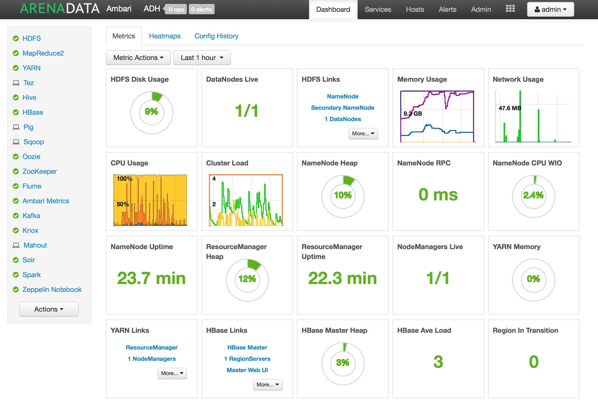

Общий обзор¶
Arenadata Unified Data Platform (Универсальная платформа данных) – это интегрированный набор компонентов корпоративного уровня на базе решений с открытым исходным кодом. Платформа включает в себя все необходимые компоненты для управления данными, доступа к данным, анализа данных, интеграции, безопасности и администрирования.

Основная идея универсальной платформы заключается в обеспечении возможности работы с любыми типами и форматами данных путем комбинированного использования различных технологических решений и архитектур обработки данных.

В настоящий момент полностью реализован уровень хранения и обработки слабоструктурированных и неструктурированных данных – Arenadata Hadoop (ADH). Это полноценный дистрибутив распределенной платформы хранения на базе Apache Hadoop, адаптированный для корпоративного использования.
В 2016 году дистрибутив Arenadata Hadoop 1.3.2 прошел сертификацию и получил подтверждение о полном соответствии стандартам Open Data Platform Initiative (ODPi). ODPi – крупнейшее мировое сообщество разработчиков проектов хранения больших данных с открытым кодом под эгидой Linux Foundation: `https://www.odpi.org/odpi-isvs/odpi- compliant-hadoop-platforms`_
В состав текущей версии дистрибутива входят следующие компоненты: HDFS, YARN, Zookeeper, HBase, Pig, Hive, Tez, Sqoop, Mahout, Flume, Hue, Spark, Apex.
Выход следующей версии дистрибутива планируется во втором квартале 2017 года, и в нее будут добавлены компоненты: Atlas, Knox, Ranger, Kite API, Phoenix, Giraph, Elastic Search, NiFi, Oozie.
В отличие от других корпоративных дистрибутивов, представленных на рынке, Arenadata Hadoop обладает рядом особенностей:
•вся поддержка и непосредственно экспертиза доступна в России и на русском языке;
•есть пакет утилит для полной off-line установки (без доступа к сети Интернет);
•вся сборка выполнена на базе открытых проектов Apache, нет проприетарных компонентов;
•российское программное обеспечение;
•поддержка доступна как удаленно, так и on-site;
•есть набор доступных типовых пакетных сервисов по планированию, установке и аудиту системы.
Arenadata Hadoop обеспечивает полный набор возможностей и инструментов для автоматического развертывания компонентов как на «голом железе», так и на виртуальных машинах (в «облаке»). Средства мониторинга и управления конфигурацией кластера позволяют оптимизировать производительность для всех компонентов системы. Apache Ambari обеспечивает интерфейсы для интеграции с существующими системами управления, например, Microsoft System Center и Teradata ViewPoint.
Оригинальная документация на русском языке позволяет облегчить процесс планирования и разворачивания кластера Hadoop. Для работы с платформой и получения полной версии документации необходимо заполнить форму запроса на вкладке «Скачать»: `http://arenadata.io/adru-download.html #arenadata-ru-download-easydown`_.